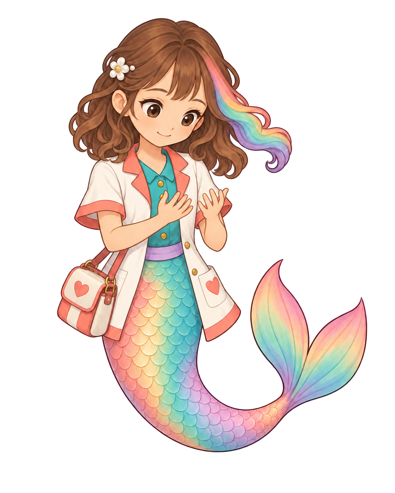

Preceding rubbing-source candidateDoctor washing: clean-hands ending
Source4.5/5 · unbound · complete action pending
The child face, brown curls/rainbow lock, flower, coral-trim coat, teal shirt, heart satchel, broad rainbow tail and paired fin remain coherent with the washing draft. Both attached hands gently separate with readable rounded child fingers and no lather. The small smile and gaze make a plausible clean-hands ending. Source-only4.5 is a drafting floor; chest-level palms, hand separation and the transition from rubbing still need exact game-size and complete-action review.
Bounded written evaluation · Exact input/prompt/native provenance · Alpha measurements
Neutral white and aqua original-size views show no visible disconnected red flecks. Pure-red samples in the transparency display are alpha1/255, with none at alpha16 or higher; native hidden RGB and alpha remain unchanged. This observation does not establish mounted edge or target-device acceptance.

One complete source-only ending candidate. No wetting/rubbing/rinsing timing, clean payoff in-game, interruption/return, device/child/owner or cinematic delivery acceptance.